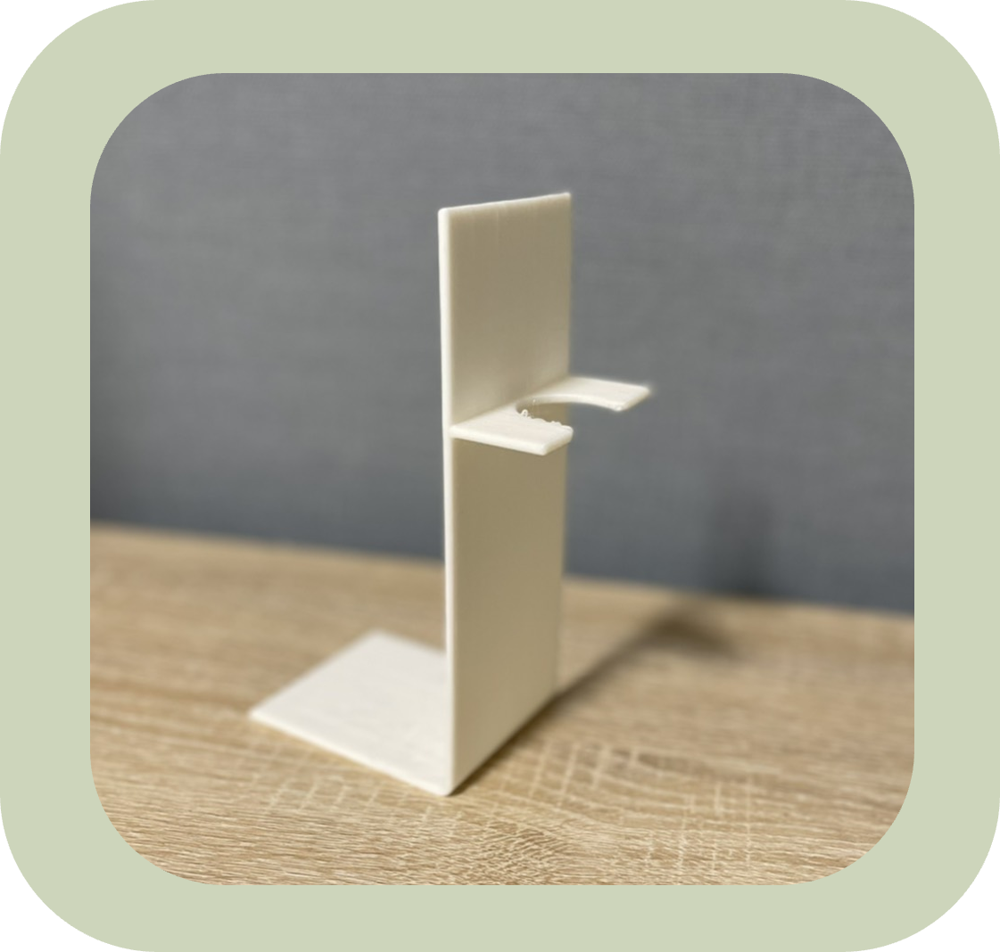
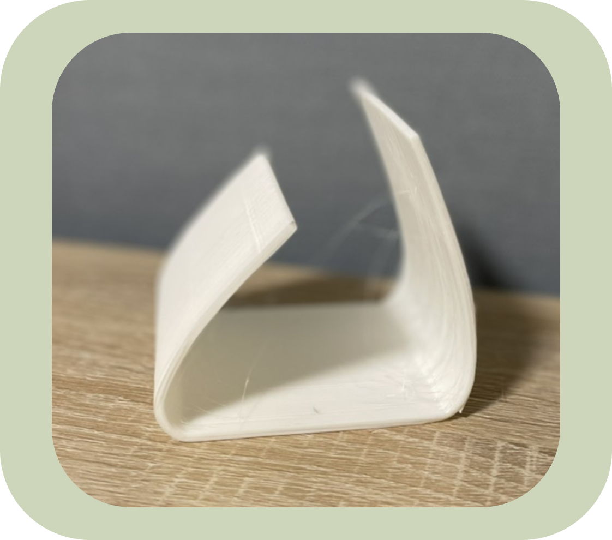
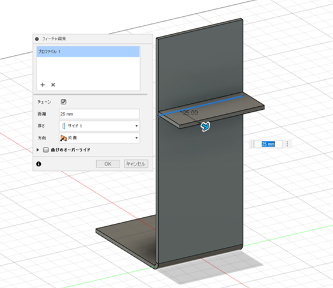

【2021.7.12】7.12記事の制作手順
2021.7.12
・XY平面にこのようなスケッチを描きます
・側面をフランジで90mmずつ、底を押し出しで6mm伸ばす。
・側面にオフセット平面を構築し、直径160mmの円を描く。
・その際、底面より下に外れている部分を切り取り、底面に合わせて線を引いておく。

・10mm押し出しして、結合させる。
・反対の側面も同様にスケッチ➡押し出しをする。
・片方の側面に鍋蓋の取ってを掛けるための穴を作ります。
・円のオブジェクトの一番上に合わせて80mmの円を描きます
押し出ししたら完成です。

このように鍋の蓋を立てかけることができます。


・XY平面にこのようなスケッチを描きます。
・フランジで100mm伸ばします。
・厚さ3mmの底面を作り、結合させます。

・側面にオフセット平面を構築し、このようなスケッチを描きます。
・5mm押し出して、結合させます。
・反対側の側面も同様にスケッチ➡押し出しします。
・片方の側面に鍋蓋の取ってを掛けるための穴を作ります。
・少し上の方に80mmの円を描きます。
押し出ししたら完成です。

このように鍋の蓋を立てかけることができます。

・XY平面にこのようなスケッチを描きます。
・フランジで80m伸ばせば完成です。
このように鍋の蓋を立てかけることができます。

・XZ平面にこのようなスケッチを描きます。
・フランジで方向を『対称』にし、30mm伸ばします。
・側面に端を繋ぐような線を1本引きます。

・フランジで25mm伸ばします。
・先ほど伸ばした平面状に直径25mmの円を描きます。
押し出しで『切り取り』し、完成。
このように、しゃもじを立てかけることができます。
糸見啓介